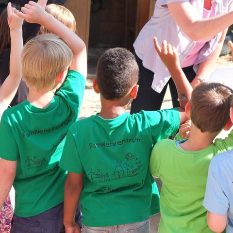

Anwendung
Kitaplatzvergabe
Koordinierte Vergabe über alle Träger: weniger Mehrfachzusagen, schnellere Besetzung, transparente Kriterien.

10+
Kommunen nutzen das Verfahren
3
Bundesländer
seit 2019
im Einsatz
1 Woche
für die koordinierte Vergabe
Ausgangslage
Das Problem
Eltern bewerben sich bei mehreren Kitas zugleich, und jede Einrichtung vergibt ihre Plätze für sich. Manche Familien halten mehrere Zusagen, andere warten, obwohl Plätze frei wären. Der Mangel erscheint größer, als er ist, und Kita-Leitungen verbringen Wochen mit Nachrückverfahren.
Ansatz
Die Lösung
Ein gemeinsames Verfahren stimmt ab, welche Kita welcher Familie wann ein Angebot macht. Die Träger behalten ihre Aufnahmekriterien; das Verfahren sorgt nur dafür, dass Angebote nicht blockiert werden und frei werdende Plätze sofort weitergehen.
Das Verfahren
- Wünsche angeben. Eltern nennen über eine zentrale Anmeldung mehrere Wunsch-Kitas in ihrer Reihenfolge.
- Kriterien anwenden. Jede Kita ordnet ihre Bewerbungen nach ihren eigenen Aufnahmekriterien, etwa Alter, Geschwister oder Wohnort.
- Angebote koordinieren. In mehreren Runden erhalten Familien Angebote. Jede Familie hält höchstens ein Angebot; nimmt sie ein besseres an, wird das vorige sofort frei.
- Freie Plätze weitergeben. Frei gewordene Plätze gehen in der nächsten Runde an die nächste passende Familie, bis keine Verbesserung mehr möglich ist.
Was das Verfahren garantiert
- Keine Familie hält mehrere Plätze gleichzeitig.
- Kein Platz bleibt frei, solange eine Familie ihn ihrem aktuellen Angebot vorzieht und nach den Kriterien der Kita Vorrang hätte.
- Zusätzliche Wünsche verschlechtern nicht die Chancen auf den Erstwunsch.
- Die Träger entscheiden weiter selbst nach ihren Kriterien.
Das Verfahren schafft keine neuen Plätze. Es sorgt aber dafür, dass die vorhandenen Plätze schnell und nach Bedarf vergeben werden, und es zeigt, wie viele Plätze vor Ort tatsächlich fehlen. Grundlage ist ein iteratives Deferred-Acceptance-Verfahren, das auch dezentral funktioniert.
Im Einsatz
Unter dem Namen KitaMatch wird das Verfahren in mehr als zehn Kommunen in drei Bundesländern eingesetzt. 2022 zeichnete der ZEW-Förderkreis Wissenschaft und Praxis das Projekt als bestes wirtschaftspolitisches Beratungsprojekt des ZEW aus.
seit 2024
Tübingen
Die Universitätsstadt vergibt ihre Betreuungsplätze seit der Hauptvergaberunde für das Kindergartenjahr 2024/25 mit KitaMatch. Die Anmeldung läuft über eine zentrale Anmeldestelle; Eltern geben mehrere Wunscheinrichtungen in ihrer Reihenfolge an.
seit 2019
Kaiserslautern
Die Stadt gehört zu den ersten Kommunen, die ihre Kitaplätze koordiniert über alle Träger vergeben.
seit 2019
Kreis Steinfurt, Greven und Emsdetten
Im Kreis Steinfurt läuft die Vergabe seit 2019 über KitaMatch; die Erfahrungen dort bildeten die Grundlage für den öffentlichen Leitfaden. Auch Greven und Emsdetten setzen das Verfahren ein.
Materialien
Leitfaden
Best Practices Kitaplatzvergabe
Handbuch zum Ablauf für Jugendämter, Träger und Kita-Leitungen.
Leitfaden
Die KitaMatch-Software
Wegweiser für eine schnelle, faire und transparente Kitaplatzvergabe.
Fachartikel
Alleinerziehende in der Betreuungsplatzvergabe
Status quo und Handlungsempfehlungen.
Policy Brief
Dezentrale Kitaplatzvergabe ohne Warteschlange
Ein Leitfaden für Kommunen.
Podcast
Auf die Plätze, fertig, los!
So gelingt die Kitaplatzvergabe.
Podcast
The Missing Middle
How market design gets built for the public sector.
In der Presse
- Tagesspiegel, 08/2023Algorithmus sucht passenden Kitaplatz
- WirtschaftsWoche, 12/2021„Kita-Match“: Ein Kitaplatz per Algorithmus
- FAZ, 11/2019Gegen den Kita-Frust
Weitere Presseberichte (4)
- Die Zeit, 02/2021Beitrag in Die Zeit
- WirtschaftsWoche, 01/2020Marktdesign: Ökonomie ohne Elfenbeinturm
- Die Rheinpfalz, 10/2018Beitrag in Die Rheinpfalz
- FAZ, 06/2017Raus aus der Kita-Warteschlange
Publikationen
Liste anzeigen
- 6
- 5
- 4
- 3
- 2
- 1
Kitaplatzvergabe in Ihrer Kommune?
Sie planen eine Umstellung oder möchten Ihr bisheriges Verfahren auswerten lassen.